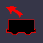

Junctionary - Stations - Combined
| Stations | |
|---|---|
| All Stations | |
| Basic Stations | |

|
Pickup Stations |
 |
Drop Stations |

|
Combined Stations |
| SRNW Stations | |

|
Back to Junctionary |

|
Back to Stations |


| Combined Stations (what is that?) | ||||||
|---|---|---|---|---|---|---|
| Date | Screenshot | Specification | Description | Creator | additional | |
| 11.01.11 |  |
Drop and pickup station | Here goes a typical Mark station with X-less terminus and a _ton_ of eyecandy. | Mark, Skasi | Download PSG #90
| |
| 11.01.11 | City station | Wonderfully looking city station. | Mark | Download PSG #105
| ||
| 11.01.11 | Refit Station | A very simple refit station. | Combuster | Download PSG #141
| ||
| 11.01.11 | PBS WTF | This pax terminal is very interesting by providing as few colliding paths as possible. | unknown | Download PSG #151
| ||
| 11.01.11 | Tunnel bypass | This transfer station is special by the bypass for ML trains which is situated in tunnels under station. | Combuster | Download PSG #159
| ||
| 11.01.11 | Double X-less Terminus | The one typical station for Mark. A terminus without X on the "main" side and the other station fitting into it. Awesome on the sight! | Mark | Download PSG #164
| ||
| 11.01.11 | Refit Station | The first refit station with cargo return - on separate platforms. | V453000 | Download PSG #186
| ||
| 11.01.11 | Reverser Exit, tunnel under station | This station is trying to save space for towns by reversers in tunnels and tunneled exit from the station. | V453000 | Download PSG #187
| ||
| 11.01.11 |  |
Space effectiveness | This was a double-station where trains transferted at one, loaded at the other. As the game had gotten many lines, the main challenge was to put the station within 64 tiles of station spread. | V453000 | Download PSG #192
| |
| 11.01.11 |  |
Refit Station | A refit station with cargo return on the same platforms long TL+1, using the [near end] and [far end] orders. | V453000 | Download PSG #197
| |
| 11.01.11 | Transfer station | A terminus transfer station using a kind of X-less PBS entrance/exit.. | V453000 | Download PSG #200
| ||
| 11.01.11 | Refit Station | A refit station with cargo return by TL+1 platforms and all platforms shared for all actions, be it drop, pickup or cargo return. | V453000 | Download PSG #200
| ||
| 11.01.11 | Pax terminal | A very special station using one ML underground and the station on the surface. Also note the extremely important message on it. | V453000,mfb,sturmi | Download PSG #201
| ||
| 11.01.11 | Refit Station | A very advanced refit station being not only balanced but also featuring cargo return by TL+1 platforms and mainly stac-proof depots. | V453000 | Download PSG #205
| ||
| 11.01.11 | Merged pickup and drop | Every 2 platforms swap being drop/pickup. Quite an interesting way how to make a station. | V453000 | Download PSG #211
| ||
| 11.01.11 | Merged pickup and drop | First drop, then pickup. That is how this station works when trains pass around the 2way eol. However the most interesting thing on this station is the exit. Using PBS and 2way entry signals helps trains decide which line to choose without unnecessary waiting in waiting bays. Also note that each choice fork is made after just 3 platforms so the throughput of each fork is quite low. | V453000 | Download PSG #216
| ||
| 20.12.2011 | ICE station | Special design to make one side of the station drop passengers to the town and the other side load them to the next town. Entry and exit from two directions.. | LoPo | Download PSG #221
| ||
| 26.12.2012 | Multiple pickup and drop | Using one incoming line for all of the pickup platforms is not the sanest idea. However throwing drop platforms in the mix made it a bit easier as they made more space for the overflow logic for pickups. It still made for a bridge/tunnel madness. | V453000 | Download PSG #222
| ||


Categories: Junctionary